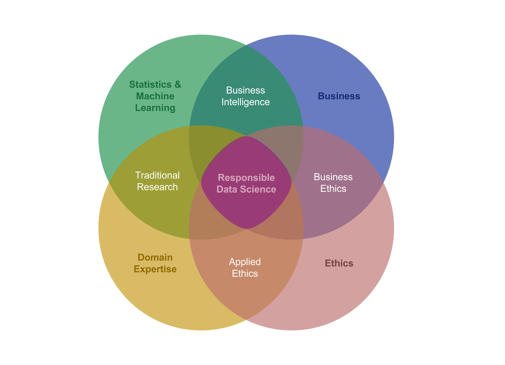

Responsible Data Science¶
Why We Need Ethics in Industry¶
By: Niels Bantilan¶
As someone who came into the tech industry from the public health field, I feel like I naturally seek purpose and social impact in my work. What does this mean to me as a data scientist? It means that I want to apply machine learning (ML) to real-world problems in a way that prevents, and ideally reverses, the widening social disparities that exist today. It’s this personal mission that drew me to Arena.
Our mission is to transform the workforce so that people and organizations thrive, and one of our core theses is that we can do this by removing bias from the hiring process through machine learning and predictive analytics. This expressed dedication to correcting for the cognitive human biases that lead us to hire people like ourselves is one of the things that makes working at Arena exciting for me. Maybe it’s my public health background, or maybe it’s the thing that made me want to take ethics and philosophy classes during my formative years in college, but my long view on machine learning, and artificial intelligence more broadly, is this: if we want to responsibly deploy intelligent systems to help us make socially sensitive decisions like medical diagnosis, parole-granting, and hiring, we should consider ethics to be a critical competency of the contemporary data scientist. This is because, at its core, ethics is the exercise of asking the right questions about what we ought to do, and, in the context of industry, should be a cognitive tool that helps us clarify our organizational values and priorities.
Machine Learning as a Black Mirror¶
We often frame ML models as black boxes because we show them some input, we get some output in return, and whatever happens in between is often inscrutable or incomprehensible, at least to people outside the statistical and ML disciplines (but oftentimes also within them). While this metaphor is appropriate in many cases, thinking of machine learning as a black mirror better captures the potentially insidious side of applied ML because, sort of like the popular Netflix TV show, it highlights the reality that these models can reflect and amplify the patterns in whatever data we show them, potentially leading to unintended and undesirable consequences. As many writers and thought leaders have pointed out again, again, and again, if we train ML models on socially biased data, they’re able to learn and approximate those biases in one form or another.
Fairness, Accountability, and Transparency in Machine Learning¶
Luckily, there’s a growing body of work relating to fairness, accountability, and transparency in ML. At conferences like the FATML and FAT*, ML practitioners, researchers, and policymakers are writing and sharing knowledge about how to design fair and interpretable machine learning algorithms when applied to socially sensitive decisions. I was fortunate enough to speak at one such event this year, called the Bloomberg Data Exchange for Good, where I shared my work and preliminary evaluation of a fairness-aware machine learning interface that I implemented in Python, called themis-ml. If you want to dive into the details you can check out the paper here, but the gist of it is that we need better tools for measuring and reducing social bias in machine learning algorithms. Themis-ml is intended for developers, researchers, and product teams, and provides an application programming interface to help them (1) measure the degree to which a specific dataset is socially biased, (2) measure the degree to which an ML model trained on this dataset produces potentially discriminatory predictions, and (3) leverage fairness-aware ML techniques to reduce the degree to which models learn the discriminatory biases in data. So how do bias, discrimination, and fairness relate to each other? There are many ways to look at this question, but here’s how I unpack it in the paper:
Colloquially, bias is simply a preference for or against something, e.g. preferring vanilla over chocolate ice cream. While this definition is intuitive, here we explicitly define algorithmic bias as a form of bias that occurs when mathematical rules favor one set of attributes over others in relation to some target variable, like “approving” or “denying” a loan.
Algorithmic bias in machine learning models can occur when a trained model systematically generates predictions that favor one group over another in relation to some set of attributes, e.g. education, and some target variable, e.g. “default on credit”. While the above definition of bias is amoral, discrimination is in essence moral, occurring when an action is based on biases resulting in the unfair treatment of people. We define fairness as the inverse of discrimination, meaning that a “fairness-aware” model is one that produces non-discriminatory predictions.
Data Science in Industry as Applied Ethics¶
Themis-ml and (hopefully) others like it in the future are only the means to an end, and it’s important to remind ourselves that technology solutions like these can’t solve everything. If we care about the responsible use of ML, we still need product and research teams to explicitly establish goals, values and ethics around measuring and reducing social bias in our machine learning systems. We need to critically examine our assumptions and hypotheses about how we define, quantify, and evaluate social bias and fairness in a particular context. It’s true that ethical questions can’t always be translated into neat mathematical formalizations, but there are domains, like fair labor legislation, in which we can thoughtfully apply tools like themis-ml to make progress towards our goal. Finally, I’d like to add a contender to the battle of the data science venn diagrams, noting that “responsible data science” lies at the center.
We sorely need to include the red circle labelled “Ethics” in the mainstream narrative of what skills a data scientist needs. And with that, I will leave you with a few questions to ask yourself when building socially sensitive machine learning applications:
- What historical data am I using in my training data?
- Are these data correlated with socially sensitive attributes?
- Are any socially sensitive attributes correlated with the target label that I’m trying to predict?
- Who labelled my training data, or by what process did I obtain my labels?
- What kinds of features should I include during the training process?
- How might I measure social bias in my system and what variables do I need to monitor it?
- What do my predictions mean, and how can they be misinterpreted or misused by the end user?
- What negative/positive feedback loops is my ML system introducing into the real world?